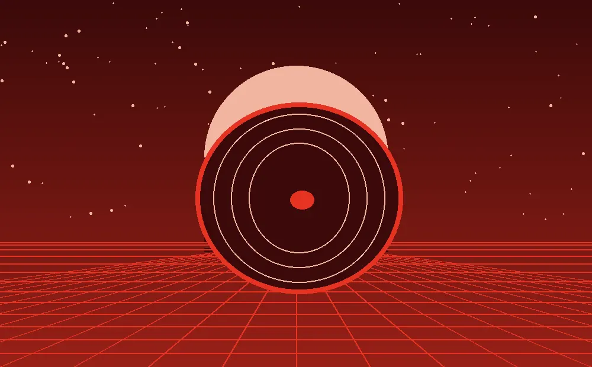
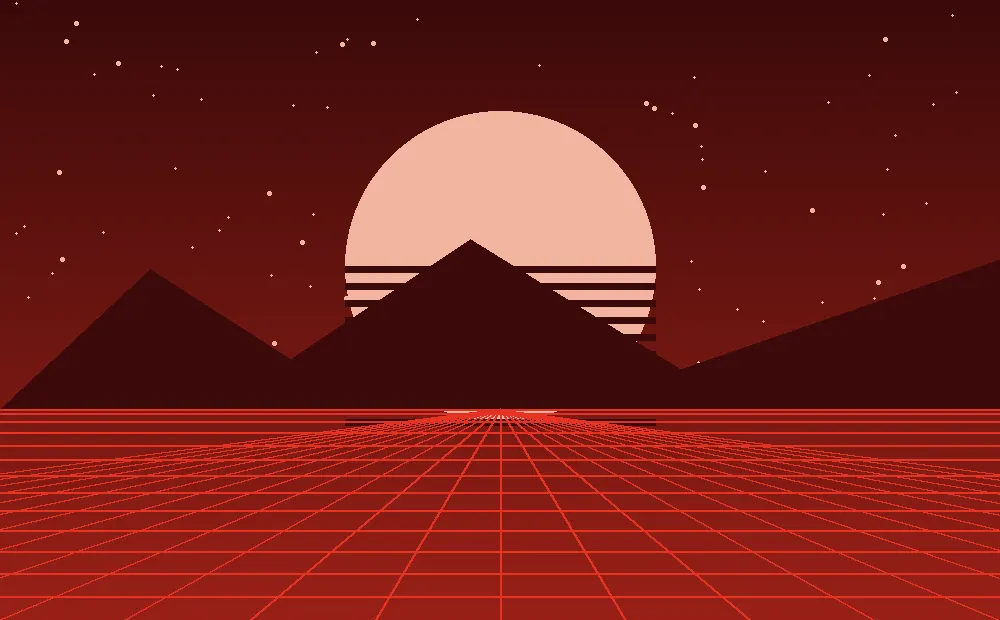
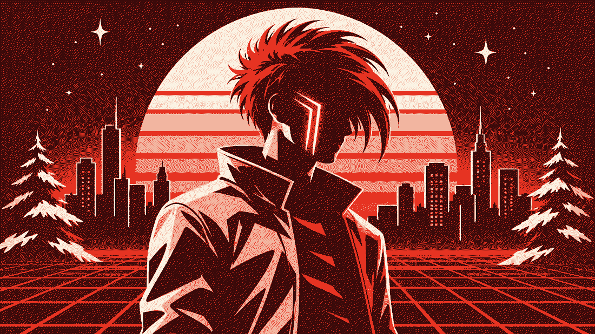
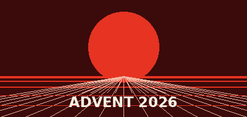

DER FAHRPLAN
PROGRAMM & BEATS
Vom ersten Neonlicht bis zum letzten Track: So könnte dein Abend im Twister aussehen.

Dein Abend auf einen Blick
Der Ablauf ist ein kreativer Beispielplan für das Studienprojekt. Die Programmpunkte bauen aufeinander auf: erst entspannt starten, dann zusammen feiern und schließlich mit einem großen Finale ausklingen lassen.
| Uhrzeit | Programmpunkt | Was passiert? |
|---|---|---|
| Doors Open | Ankommen, Garderobe und erster Blick auf die Neonwelt. | |
| Warm-up Waves | Melodischer Synthpop zum Einsteigen und Wiedersehen. | |
| Retro Christmas Mix | Festliche Melodien treffen elektronische Remixes. | |
| Neon Photo Moment | Gemeinsamer Fotomoment vor der leuchtenden Kulisse. | |
| Twister Main Set | Der energiegeladene Höhepunkt mit treibenden Beats. | |
| Midnight Glow | Ein kurzer Lichtmoment und der nächste musikalische Gang. | |
| Last Wave | Gemeinsamer Abschluss mit den letzten Lieblingssongs. |
Sound und Stimmung

Die Musik
Stell dir warme Synthesizerflächen, pulsierende Basslines und bekannte Melodien in überraschenden Versionen vor. Wir wechseln bewusst zwischen ruhigeren Phasen und intensiven Tanzmomenten, damit der Abend seinen eigenen Rhythmus entwickelt.
Das Licht
Die Bühne orientiert sich an klassischen Retrowave-Motiven: Horizontlinien, Sonnenkreise und geometrische Muster. Die Farbwelt bleibt dabei konsequent in Dunkelrot, Creme, Korallrot und sanftem Rosé.
Neon-Future trifft Advent

Die futuristische Figur verbindet den energiegeladenen Look des Synthwave mit der warmen Advents-Farbwelt. Lichtkanten, Stadtsilhouetten und ein strahlender Hintergrund greifen das visuelle Motto der Nacht auf.
Gut vorbereitet in die Nacht
Einlass ist ab 21 Uhr vorgesehen. Wer 16 oder 17 Jahre alt ist, benötigt für den geplanten Besuch eine schriftliche Erziehungsbeauftragung („Muttizettel“) sowie eine geeignete volljährige Begleitperson. Ausweis und Unterlagen müssen beim Einlass vorgezeigt werden. Ohne die erforderlichen Nachweise ist kein Einlass vorgesehen.
Die angegebenen Zeiten sind ein Gestaltungskonzept und keine verbindlichen Zusagen. Informationen zu einem realen Veranstaltungsort, auftretenden DJs oder verbindlichen Öffnungszeiten liegen nicht vor.
Neon in Bewegung
Ein kurzer animierter Eindruck vom pulsierenden Raster unserer fiktiven Clubnacht.
